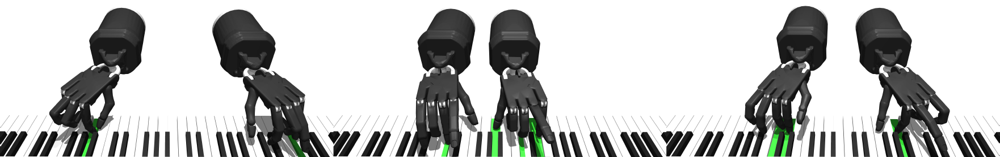

Kevin Zakka (1, 2)Laura Smith (1)Nimrod Gileadi (3)Taylor Howell (4)Xue Bin Peng (5)Sumeet Singh (2)Yuval Tassa (3)Pete Florence (2)Andy Zeng (2)Pieter Abbeel (1)
(1) University of California, Berkeley(2) Robotics at Google(3) DeepMind(4) Stanford University(5) Simon Fraser University

Abstract
We introduce a new benchmarking suite for highdimensional control,
targeted at testing high spatial and temporal precision,
coordination, and planning, all with an underactuated system
frequently making-and-breaking contacts. The proposed challenge
is mastering the piano through bi-manual dexterity, using a pair
of simulated anthropomorphic robot hands. We call it ROBOPIANIST,
and the initial version covers a broad set of 150 variable-
difficulty songs. We investigate both modelfree and model-based
methods on the benchmark, characterizing their performance
envelopes. We observe that while certain existing methods, when
well-tuned, can achieve impressive levels of performance in
certain aspects, there is significant room for improvement.
ROBOPIANIST provides a rich quantitative benchmarking environment,
with human-interpretable results, high ease of expansion by simply
augmenting the repertoire with new songs, and opportunities for
further research, including in multi-task learning, zero-shot
generalization, multimodal (sound, vision, touch) learning, and
imitation.
@article{
RoboPianistZakka2023,
title={RoboPianist: A Benchmark for High-Dimensional Robot Control},
author={Kevin Zakka and Laura Smith and Nimrod Gileadi and Taylor Howell and Xue Bin Peng and Sumeet Singh and Yuval Tassa and Pete Florence and Andy Zeng and Pieter Abbeel},
year={2023},
eprint={2304.04150},
archivePrefix={arXiv},
primaryClass={cs.RO}
}